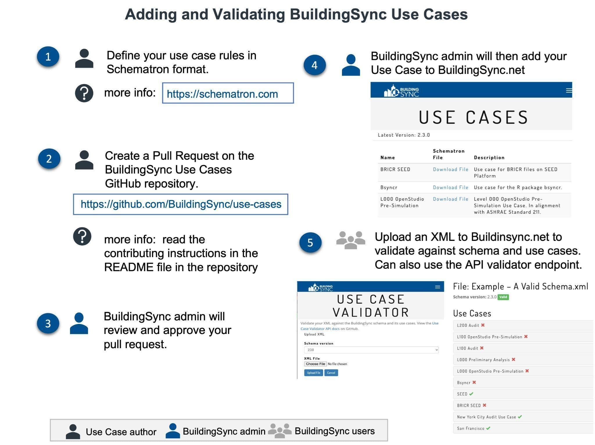

National Renewable Energy Laboratory
Jie Xiong, Lauren Adams, Alex Swindler, Katherine Fleming, Cory Mosiman, Nicholas Long
Last Updated: September 28, 2023
Version 1.3
BuildingSync is a building data exchange schema to better enable integration between software tools and building data workflows. The schema’s original use case was focused on commercial building energy audits; however, several additional use cases have been realized including building energy modeling and generic building data exchange.
BuildingSync helps streamline the data exchange process, improving the value of the data, minimizing duplication of effort for subsequent building data collection efforts (including audits), and facilitating the achievement of greater energy efficiency.
A BuildingSync use case is an (auditing) workflow within which BuildingSync is leveraged for data exchange in platform(s). Depending on the connected platform(s), various users can collect, report, process, and analyze audit data through BuildingSync for their specific objectives. BuildingSync considers the needs and interests of a wide range of users in the energy audit industry, including building owners, auditors, software developers, utilities, and program managers. Typical BuildingSync use cases include:
BuildingSync has traditionally been focused on exchanging data from auditing workflows in a linear fashion: typically an auditing tool would write a BuildingSync file which would then be read by a portfolio type tool to store the results. Note, though, that this is simply a single use case for BuildingSync and plenty more use cases exist, both real as well as aspirational.
Table 1 below shows the existing BuildingSync use cases approved and validated:
| Name | Description |
|---|---|
| BETTER | Use case for BETTER analysis |
| Bsyncr | Use case for the R package bsyncr |
| Building EQ | Use cases for the ASHRAE’s Building EQ Portal |
| GHG Emissions | Use cases for emissions audits |
| L000 OpenStudio Pre-Simulation | Level 000 OpenStudio Pre-Simulation Use Case. In alignment with ASHRAE Standard 211 |
| L000 Preliminary Analysis | Level 000 Preliminary Analysis for ASHRAE Standard 211 audits |
| L100 Audit | Use case for the ASHRAE Standard 211 level 1 audits |
| L100 OpenStudio Pre-Simulation | Level 100 OpenStudio Pre-Simulation Use Case. In alignment with ASHRAE Standard 211 |
| L200 Audit | Use case for the ASHRAE Standard 211 level 2 audits |
| New York City Audit Use Case | NY LL87 use case |
| San Francisco | Use case for the city of San Francisco |
| SEED | General use case for files on SEED Platform |
Table 1. List of currently supported use cases
This document will describe the necessary steps to create a new BuildingSync use case to enable interoperability with software, tools, or databases.
The first step is to define and design the use case framework. The following questions are to be answered and determined:
The use case implementation is a set of rules applied to the BuildingSync schema and is defined in the language Schematron. Schematron allows us to define special requirements for XML documents by writing rules. The rules are used to define stricter or more specific documents that can be used in the workflow enabled by the use case. These rules are generally written using XPaths and assertions about element counts, contents, properties, etc. Schematron also allows you to specify the “severity” of an assertion (e.g., INFO, WARNING, or ERROR) along with a custom message for the user running the validation.
Documents that are valid with respect to the use case are also valid with respect to the more general BuildingSync schema. For example, while the BuildingSync schema has multiple optional fields that can represent a building’s location (latitude, longitude, street address, city, state, zip code, country, etc.), a use case may require that all documents contain the building’s zip code.
The use case Schematron should define:
To begin writing a Schematron use case, you can refer to existing use cases published on the BuildingSync website and check out these general resources on Schematron:
We have also created a tool which eases the process of writing Schematron. It allows you to write Schematron in a CSV format and then generate a Schematron document from that CSV. Refer to the docs in the BuildingSync TestSuite repo for more information.
There are some common gotchas that can occur when writing Schematron which we outline below:
/a/b/c, but b does not exist, the tests within the rule will not be run. Thus if you want to make sure it always runs, you need to first assert the path to your context exists (recursively…)/a/b and the second with the context /a/b[@id = 1], the first rule matches all b elements, so there are none “left” to match the second rule context. To get around this you need to move the tests into separate patterns b/c starting a new pattern resets this condition./animals/dogs but misspelled it as /aminals/dogs the rule would get skipped. The only workaround for this is to write meta-tests for your use case. This means using another test framework, like python’s unittest, to run the schematron against many different documents to make sure everything is as it should be.Problem: I need to check some element that’s conditionally selected by an ancestor or sibling element
Example: For the Standard 211 Level 2 Schematron, we wanted to make sure the gross floor area was provided for a building, but we don’t care if the other floor area types (e.g. Heated, Cooled, Open, etc) have the floor area provided. Using XPath predicates we can select the floor area we want to test like so:
<sch:rule context="//auc:Buildings/auc:Building/auc:FloorAreas/auc:FloorArea[auc:FloorAreaType/text() = 'Gross']">
<sch:assert test="count(auc:FloorAreaValue) > 0">FloorAreaValue must be provided for Gross floor area</sch:assert>
<sch:rule>XPath predicates are very powerful and can allow you to even reach across the entire XML tree (see the example below for checking linked elements).
Problem: I need to check that an element is properly linked to another element somewhere else in the XML tree
Example: BuildingSync uses IDref attributes to link one element to another. For the Standard 211 Level 2 Schematron, we needed to make sure that the building included auc:PrimaryContactID with the attribute IDref which pointed to the ID attribute of an auc:Contact. We use XPath predicates again to make this happen:
<sch:rule context="//auc:Buildings/auc:Building">
<sch:assert test="auc:PrimaryContactID[@IDref=//auc:Contacts/auc:Contact/@ID]">auc:PrimaryContactID must exist and link to a valid auc:Contact</sch:assert>
<sch:rule>Problem: I need to do a simple summation of multiple elements to check a value
Example: You might want to assert that the sum of all electricity meter usage reports are equal to the reported annual fuel use (auc:AnnualFuelUseNativeUnits or auc:AnnualFuelUseConsistentUnits). This can be accomplished using the XPath sum() function. See the example below which also demonstrates how to use variables to make the tests more easily readable:
<sch:rule context="//auc:Buildings/auc:Building">
<sch:let name="summedMeters" value="sum(//auc:TimeSeriesData/auc:TimeSeries/auc:IntervalReading)"/>
<sch:assert test="$summedMeters //auc:ResourceUses/auc:ResourceUse/auc:AnnualFuelUseNativeUnits">auc:AnnualFuelUseNativeUnits must equal the sum of auc:TimeSeries readings</sch:assert>
<sch:rule>This test makes a few assumptions (that there’s only one resource use type, the reported interval reading is in the native units) but it gets the point across.
Use cases are published in the BuildingSync/use-case repository. These use cases are also included on the BuildingSync website’s Use Case Validator tool, allowing users to check if their BuildingSync document passes your use case’s requirements.
To publish a use case, please refer to the repository’s documentation; in summary you need a Schematron which meets the specification as well as at least one example BuildingSync file which should be valid according to your Schematron. Once your Schematron has been approved and added to the repository, the BuildingSync team will add it to the BuildingSync website. Figure 1 below illustrates the publication workflow.

Figure 1. Adding and validating BuildingSync use case
Users can use the BuildingSync Use Case Selection Tool / Validator to validate XML documents against both the general BuildingSync schema in different versions and public use cases. The validator can be used directly on the BuildingSync Selection Tool, and example files are also provided. Other customizable validation methods and examples can be found on the BuildingSync Technical Resources website.
Additionally, a Validator API has been developed to programmatically validate XML files within a third-party web tool or software package. More information on the API can be seen on the Validator on GitHub.
The following resources may be useful for use case development.